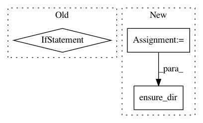

6acd781f6d5ff89971039a0ee21e38d63ebcd1b8,cistar-dev/cistar/core/base_env.py,SumoEnvironment,__init__,#SumoEnvironment#Any#Any#Any#Any#,34
Before Change
// Represents number of steps taken
self.timer = 0
// 0.01 = default time step for our research
self.time_step = sumo_params["time_step"] if "time_step" in sumo_params else 0.01
if "port" not in sumo_params:
raise ValueError("SUMO port not defined")
After Change
self.time_step = 0.01 // 0.01 = default time step for our research
if "emission_path" in sumo_params:
data_folder = sumo_params["emission_path"]
ensure_dir(data_folder)
data_folder += "emission.xml"
else:
self.emission_out = None
In pattern: SUPERPATTERN
Frequency: 3
Non-data size: 3
Instances
Project Name: flow-project/flow
Commit Name: 6acd781f6d5ff89971039a0ee21e38d63ebcd1b8
Time: 2017-04-20
Author: kanaadp@gmail.com
File Name: cistar-dev/cistar/core/base_env.py
Class Name: SumoEnvironment
Method Name: __init__
Project Name: keras-team/autokeras
Commit Name: 60684cf9a2ff4fa92cf0424a13790896ce0a29fe
Time: 2019-01-28
Author: boyuangong@gmail.com
File Name: autokeras/pretrained/face_detector.py
Class Name: FaceDetector
Method Name: load